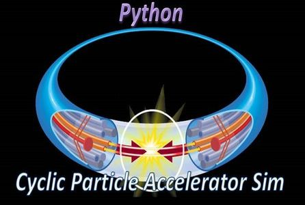
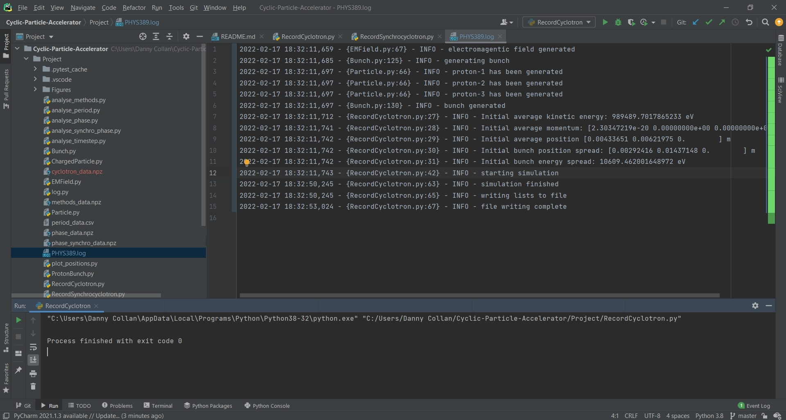

Done Using Advanced Python
In this project, I feel I have put a tremendous amount of effort into having completed. Before beginning this discussion, it must first be said that the application was done using only advanced Python. What had sparked me at first to create such a complex application nothing but a small curiosity on a science topic regarding particle acceleration.
Particle acceleration is the experimental use utilized by various scientists of today's advancing molecular research. With today's modern technology, scientists are currently utilizing machinery that can extend up to several miles known as particle accelerators. The purpose of these facilities is to send electrons at the speed of light through a pathway until they either collide with other electrons, revealing their molecular structures for scientists to observe, or enter an X-ray phase where the lights they generate that are caused by magnetic vibrations are used to melt down samples of molecules, revealing their atomic structures as a graphical representaion. The purpose of these experiments is simply for scientists to learn more about the universe, and what unknown substances it composes of, where this new information can be used to assist in the aid of improving technology everywhere in all sectors.
At the part in which I have explained the collision of electrons against each other, where their molecular structures are revealed to the scientists, these are done in facilities known as Cyclic Particle Accelerators, since they first go through circular loops for miles on until they collide with each other. For the process of sending electrons through X-rays, those are done in facilities known as Linear Particle Accelerators, since they go directly through in a straight line for miles on. For my Python project, I have decided to make a simulation application that depicts all the stages that occur during the entire Cyclic Particle Accelerator process.
As shown in the simulation above, it first creates three protons. At the second stage, bunch compressors are enabled so that they may keep the protons flowing smoothly as they travel through their paths without having to face distortion. Once this stage is passed, records that display the protons' current kinetic energy in electron volts (eV), along with their momentum and positions are shown. After these records are shown, the electrons will have "collided" with each other already after going through the circular loop, where the simulation will finish, and the analysis of the information captured from the "collision" will be written to a file titled "cyclotron_data.npz." Once the file has been created, the program will end from there.